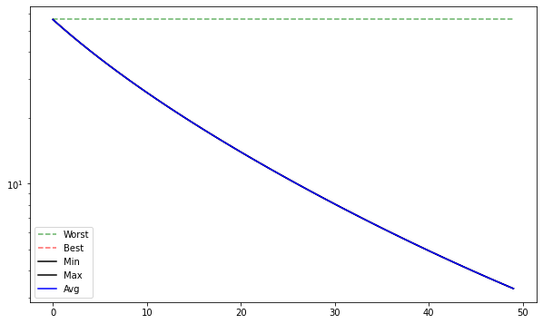
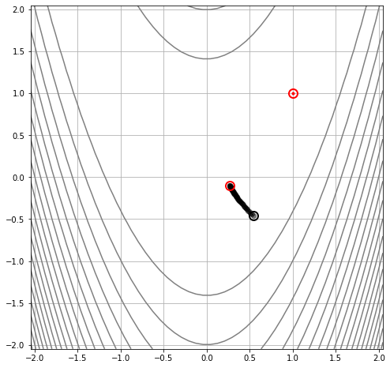
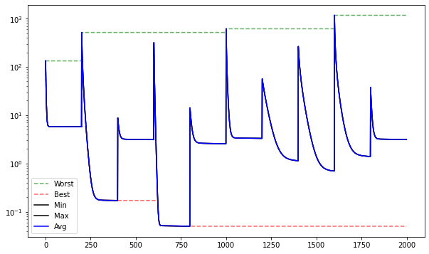
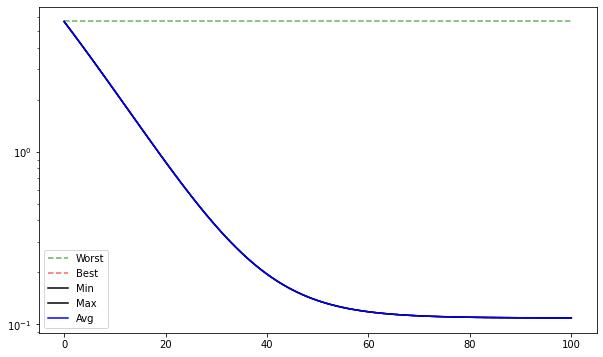
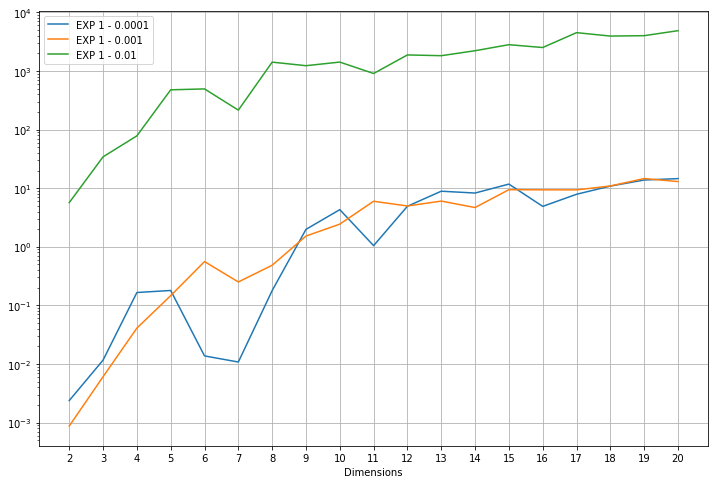
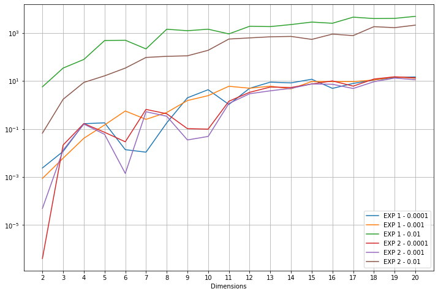

Problemas en el método del gradiente descendente¶
30:00 min | Última modificación: Mayo 25, 2021 | [YouTube]
Algoritmo¶
El método del gradiente descendente usa la ecuación de corrección o mejora:
\[ \begin{align}\begin{aligned} \mathbf{x}_k = \mathbf{x}_{k-1} - \mu \frac{\partial}{ \partial \mathbf{x}} f(\mathbf{x}_{k-1})\\donde :math:`\mu` es la tasa o factor de aprendizaje.\end{aligned}\end{align} \]
Definición del problema¶
[1]:
#
# Para ejemplificar su uso, buscará el punto de mínima de
# la función de Rosenbrock de dos dimensiones. El punto de
# mínima es f(1, 1) = 0. La región de búsqueda es
#
# -2.048 < x, y < 2.048
#
# A continuación se gráfica la función y su contorno para
# el caso de 2 dimensiones.
#
from EOS.benchmarks import Rosenbrock
fn = Rosenbrock(n_dim=2)
fn.plot_surface()

[2]:
#
# El punto rojo indica el mínimo de la función
#
fn.plot_contour()

Implementación¶
[3]:
#
# El método del gradiente descendente aprovecha la
# información local que entrega el punto actual para
# generar una aproximación mejor al mínimo.
#
#
# Se crea una instancia del geneador para crear poblaciones
# de una sola solución.
#
from EAOS.generators import RandomUniform
POPSIZE = 1
monte_carlo = RandomUniform(
pop_size=POPSIZE,
low=fn.LB,
high=fn.UB,
seed = 123456,
)
#
# Se crea la población de soluciones
#
solutions = monte_carlo()
solutions[:]
[3]:
[{'x': array([ 0.55916032, -0.47181142]), 'fn_x': None}]
[4]:
#
# Se crea una instancia del optimizador. Cada llamada
# realiza una sola iteración del método del gradiente
# descendente.
#
from EAOS.algorithms import GradientDescendent
optimizer = GradientDescendent(fn=fn, learning_rate=0.0001)
[5]:
#
# Se instancia un monitor para computar las estadísticas de
# la corrida
#
from EAOS.monitor import Monitor
monitor = Monitor()
[6]:
#
# Se realizan NITER iteraciones del algoritmo de gradiente
# descendente
#
NITER = 50
for iter in range(NITER):
#
# El único individuo existente tiene indice 0
#
solutions = optimizer(solutions)
#
# Se computan las estadísticas de la población actual
#
monitor(solutions)
#
# El monitor almacena la mejor solución encontrada
#
monitor.global_x_opt, monitor.global_fn_x_opt
[6]:
(array([ 0.26598495, -0.09553928]), 3.303923808178889)
[7]:
monitor.plot_stats()

[8]:
#
# Trayectoria del punto inicial al punto final
#
fn.plot_trayectory(monitor)

Método del gradiente descendente con reinicio¶
[9]:
#
# El resultado del método es dependiente del punto de
# arranque por lo que se suele reiniciar la optimización
# usando puntos de arranque aleatorios
#
# Se crea un nuevo monitor
monitor = Monitor()
# Número de reinicios
NRESTARTS = 10
# Número de iteraciones para cada reinicio
NITER = 200
for cycle in range(NRESTARTS):
# reinicio
solutions = monte_carlo()
for iter in range(NITER):
# El único individuo existente tiene indice 0
solutions = optimizer(solutions)
# Se computan las estadísticas de la población actual
monitor(solutions)
# Mejor punto encontrado
monitor.global_x_opt, monitor.global_fn_x_opt
[9]:
(array([1.22411802, 1.50022962]), 0.050540299141873316)
[10]:
monitor.plot_stats()

Búsqueda de un buen punto de inicio¶
[11]:
#
# En superficies dificiles, malos puntos de inicio suelen
# llevar a malas soluciones finales, por lo que se puede
# usar una técnica como Monte Carlo para encontrar un buen
# punto de arranque
#
# Estadísticas de las corridas
monitor = Monitor()
# Cantidad de soluciones simultánteas
POPSIZE = 20
# Generador del punto aleatorio
monte_carlo = RandomUniform(
pop_size=POPSIZE,
low=fn.LB,
high=fn.UB,
seed = 123456,
)
# Genera una población inicial de soluciones
solutions = monte_carlo()
# Crea una instancia del evaluador y computa el valor de la
# función para las soluciones generadas aleatoriamente
from EAOS.fnevaluator import FnEvaluator
evaluator = FnEvaluator(fn)
solutions = evaluator(solutions)
#
# Crea una instancia del seleccionador y obtiene la mejor
# solución aleatoria encontrada
#
from EAOS.operators import SelectionBest
selectionBest = SelectionBest(k=1)
solutions = selectionBest(solutions)
#
# Aplica el algoritmo del gradiente
#
monitor(solutions)
# Número de iteraciones
NITER = 100
for iter in range(NITER):
solutions = optimizer(solutions)
monitor(solutions)
monitor.global_x_opt, monitor.global_fn_x_opt
[11]:
(array([0.67013165, 0.44868433]), 0.10882850483979656)
[12]:
monitor.plot_stats()

Experimento 1¶
[13]:
import progressbar
POPSIZE = 1
RESTARTS = 20
NDIMS = 20
LEARNING_RATES = [0.0001, 0.001, 0.01]
NITER = 50
select = SelectionBest(k=POPSIZE)
best_fn_x = {}
max_value = len(LEARNING_RATES) * (NDIMS - 1) * RESTARTS
counter = 0
with progressbar.ProgressBar(max_value=max_value) as bar:
for i_learning_rate, learning_rate in enumerate(LEARNING_RATES):
exp_name = 'EXP 1 - ' + str(learning_rate)
best_fn_x[exp_name] = []
for n_dim in range(2, NDIMS+1):
fn = Rosenbrock(n_dim=n_dim)
evaluator = FnEvaluator(fn)
optimizer = GradientDescendent(fn=fn, learning_rate=learning_rate)
monitor = Monitor()
monte_carlo = RandomUniform(
pop_size=POPSIZE,
low=fn.LB,
high=fn.UB,
seed=123456,
)
for restart in range(RESTARTS):
solutions = monte_carlo()
solutions = evaluator(solutions)
monitor(solutions)
for iter in range(min(500, n_dim * NITER)):
solutions = optimizer(solutions)
monitor(solutions)
counter += 1
bar.update(counter)
best_fn_x[exp_name].append(0.00000001 + monitor.global_fn_x_opt)
#
# Grafica los resultados
#
import matplotlib.pyplot as plt
import numpy as np
plt.figure(figsize=(12, 8))
for k in best_fn_x.keys():
plt.plot(list(range(2, NDIMS+1)), best_fn_x[k], label="{}".format(k))
plt.yscale("log")
plt.grid()
plt.xticks(np.arange(2, NDIMS + 1, 1))
plt.xlabel("Dimensions")
plt.legend()
plt.show()
#
# Los resultados son muy sensibles a la tasa de aprendizaje.
# Una tasa de aprendizaje más pequeña no significa que se
# encuentre un mejor punto de mínima.
#
100% (1140 of 1140) |####################| Elapsed Time: 0:08:28 Time: 0:08:28

Experimento 2¶
[14]:
#
# Efecto de la búsqueda de un buent punto de inicio
#
POPSIZE = 100
RESTARTS = 20
NDIMS = 20
LEARNING_RATES = [0.0001, 0.001, 0.01]
NITER = 50
select = SelectionBest(k=POPSIZE)
max_value = len(LEARNING_RATES) * (NDIMS - 1) * RESTARTS
counter = 0
with progressbar.ProgressBar(max_value=max_value) as bar:
for i_learning_rate, learning_rate in enumerate(LEARNING_RATES):
exp_name = 'EXP 2 - ' + str(learning_rate)
best_fn_x[exp_name] = []
for n_dim in range(2, NDIMS + 1):
fn = Rosenbrock(n_dim=n_dim)
evaluator = FnEvaluator(fn)
optimizer = GradientDescendent(fn=fn, learning_rate=learning_rate)
monitor = Monitor()
monte_carlo = RandomUniform(
pop_size=POPSIZE,
low=fn.LB,
high=fn.UB,
seed=123456,
)
for restart in range(RESTARTS):
solutions = monte_carlo()
solutions = evaluator(solutions)
#
# Selecciona la mejor solución aleatoria
# encontrada
#
solutions = selectionBest(solutions)
monitor(solutions)
for iter in range(min(500, n_dim * NITER)):
solutions = optimizer(solutions)
monitor(solutions)
counter += 1
bar.update(counter)
best_fn_x[exp_name].append(0.00000001 + monitor.global_fn_x_opt)
#
# Grafica los resultados
#
import matplotlib.pyplot as plt
import numpy as np
plt.figure(figsize=(12, 8))
for k in best_fn_x.keys():
plt.plot(list(range(2, NDIMS+1)), best_fn_x[k], label="{}".format(k))
plt.yscale("log")
plt.grid()
plt.xticks(np.arange(2, NDIMS+1, 1))
plt.xlabel("Dimensions")
plt.legend()
plt.show()
#
# Hay una clara mejoria al buscar un buen punto de
# arranque en relación a los peores casos
#
100% (1140 of 1140) |####################| Elapsed Time: 0:08:43 Time: 0:08:43
